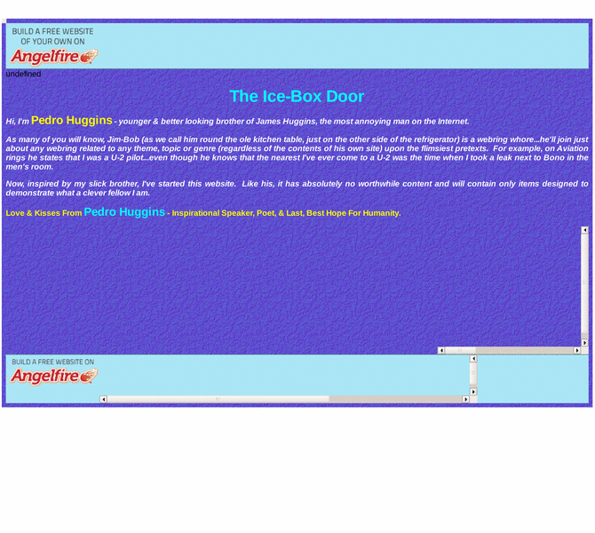

Previewing: The Ice-Box Door Previewing: The Ice-Box Door 
Use the left/right red arrow controls to navigate through this ring - Click the preview image to visit the member site.

Hi, I am Pedro Huggins (James Huggins' younger & better looking brother), like Jim-Bob (as we call James round the ole kitchen table), I look forward to the opportunity of foisting my website upon this ring despite a total lack of relevant content. What the heck, that little stickin' point never stops James from joining wazillions of rings, does it? Thanks for the ide
The Ice-Box Door owned by:
 wazillions_of_great_nav_bars wazillions_of_great_nav_bars
A member of the original webring since 12/08/2002.
|
|